꽃냉장고
꽃냉장고 렌탈, 계약서에 사인하기 전에 따져 볼 조건
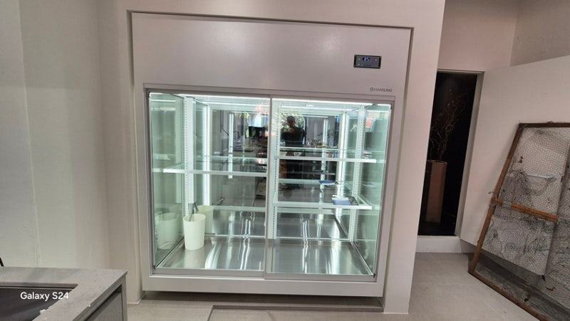
꽃냉장고 렌탈은 계약 기간 동안 내는 총액, 고장 시 관리가 포함되는지, 중도 해지 조건, 만기 후 소유권이 어떻게 되는지를 먼저 확인해야 합니다. 렌탈 제품은 대부분 정해진 규격이라 매장 자리와 인테리어에 맞지 않을 수 있으니, 맞춤 구매와 나란히 놓고 비교해 보시길 권합니다.
안녕하세요. 꽃집에 들어가는 꽃냉장고를 매장마다 설계해 만드는 한성쇼케이스입니다.
꽃집 창업을 준비하는 사장님들께 꽃냉장고는 가장 덩치 크고 부담스러운 장비입니다. 그래서 "처음엔 렌탈로 시작하고, 자리 잡으면 사는 게 낫지 않을까요?" 하는 질문을 자주 받습니다.
렌탈은 초기 지출을 나눠 낼 수 있다는 분명한 장점이 있습니다. 다만 계약서 조건에 따라 몇 년 뒤 총액이나 관리 범위가 생각과 달라지는 경우도 있어서, 월 납부액 하나만 보고 결정하시면 곤란합니다.
오늘은 꽃냉장고 렌탈 계약 전에 확인할 조건과, 렌탈이든 구매든 꽃냉장고 자체에서 꼭 봐야 할 사양을 함께 정리해 보겠습니다.
1. 월 납부액보다 계약 기간 총액
렌탈 상담에서는 대개 월 납부액을 먼저 이야기합니다. 하지만 비교할 숫자는 계약 기간 전체에 내는 총액입니다.
총액을 구매 견적과 나란히 놓으면 어느 쪽이 실제로 부담이 덜한지 분명해집니다.
만기 뒤 제품이 사장님 소유가 되는지, 반납해야 하는지, 재계약을 해야 하는지도 계약서에서 확인하세요.
같은 월 납부액이어도 만기 조건에 따라 의미가 완전히 달라집니다.
렌탈 기간 동안 내는 금액이 비용 처리에 유리하다는 이야기도 듣게 되는데, 사업 형태에 따라 다르니 세무 담당자와 함께 확인해 보시는 편이 정확합니다.
- 계약 기간 전체 총액
- 만기 후 소유권과 반납 조건
- 설치·회수 비용 포함 여부
2. 관리 범위와 고장 대응
렌탈의 장점으로 관리 포함을 내세우는 경우가 많습니다. 그런데 정기 점검만 포함인지, 부품 교체와 출장 수리까지 포함인지는 계약마다 다릅니다.
꽃냉장고는 기계실 공기 순환이 막히면 콤프레셔에 무리가 가기 쉬운 장비라, 기계실 청소를 누가 맡는지도 짚어 두세요.
가정의 달이나 졸업 시즌처럼 꽃집 성수기에 냉장고가 멈추면 손실이 큽니다. 고장 접수 후 언제까지 방문하는지, 수리 기간 동안 대체 장비를 주는지 계약서에 적혀 있는지 확인하시길 권합니다.
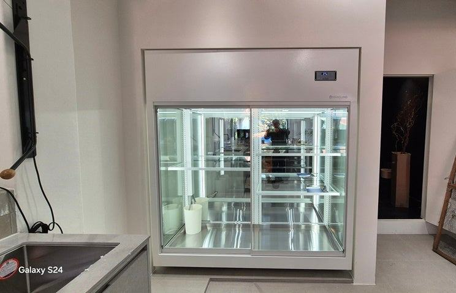
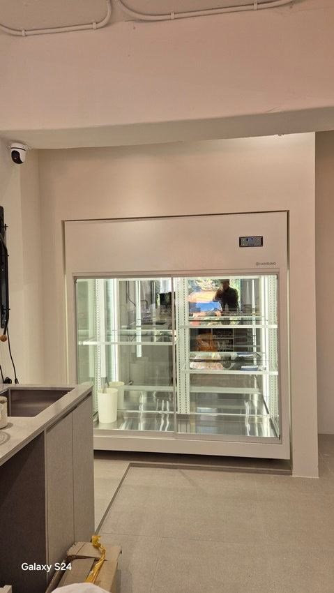
3. 중도 해지와 매장 이전
창업 초기에는 매장을 옮기거나 규모를 바꿀 일이 생길 수 있습니다. 중도 해지 위약금이 얼마나 되는지, 이전 설치를 해 주는지, 그 비용은 누가 내는지 미리 확인해 두세요.
렌탈 기간 중 생긴 흠집이나 유리 파손을 어디까지 사장님이 책임지는지도 중요합니다. 물통을 넣고 빼다 문 유리에 부딪히는 일이 잦은 꽃집에서는 이 조항이 생각보다 자주 문제가 됩니다.
- 중도 해지 위약금
- 매장 이전 시 설치 비용
- 흠집·파손 책임 범위
4. 렌탈이든 구매든 봐야 할 사양
렌탈 제품은 대부분 정해진 규격이라 매장 자리에 딱 맞지 않거나, 꽃집 인테리어와 따로 놀 수 있습니다.
꽃이 매장의 얼굴인 만큼 어느 방향에서 꽃이 보이는지, 조명이 꽃 색을 어떻게 살리는지, 기계실 통풍이 잘 되는 구조인지는 계약 방식과 상관없이 확인하셔야 합니다.
매장 크기와 분위기에 맞춘 제작이 필요하다면 맞춤 구매 견적을 함께 받아 보세요. 맞춤 제작은 발주가 몰리면 제작 기간이 길어질 수 있으니 오픈 일정에 여유를 두고 상담을 시작하시는 편이 좋습니다.
특히 조명은 같은 꽃이라도 전혀 다르게 보이게 만듭니다. 렌탈 제품을 고를 때도 실제 꽃을 넣어 둔 상태에서 색이 어떻게 보이는지 사진이나 실물로 확인해 보세요.
체크리스트
- 계약 기간 총액과 만기 조건
- 부품·출장 수리 포함 여부
- 성수기 고장 시 방문 시점
- 중도 해지·이전 조건
- 규격이 매장 자리에 맞는지
4면 유리 꽃 냉장고 쇼케이스 제작 현장
최근 꽃 냉장고 쇼케이스 문의가 크게 늘면서 제조 기간이 길어졌고, 한성쇼케이스는 공장 증설을 마쳐 납품 속도를 끌어올렸습니다.
이번에 소개하는 모델은 4면이 유리로 돼 있어 매장 어느 방향에서든 꽃이 보이도록 설계했고, 일반 형광등 대신 9000K 고출력 LED 바 조명을 넣어 꽃의 생동감을 살렸습니다.
기계실 후면에는 라지에타 청소와 공기 순환을 쉽게 하는 코팅 망을 추가해 콤프레셔 부담을 줄였고, 앞뒤 모두 깔끔하게 마감해 매장 가운데 두어도 어색하지 않도록 했습니다.
렌탈 제품을 고르실 때도 이런 조명과 기계실 구조를 함께 비교해 보시길 권합니다.
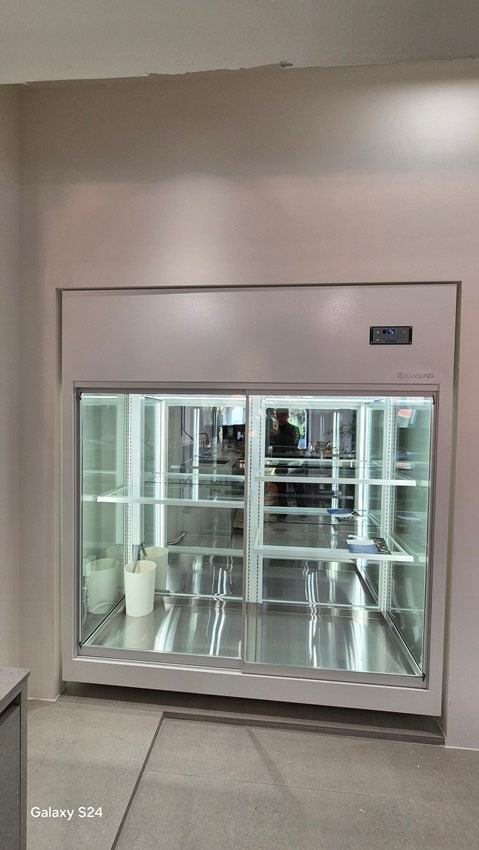
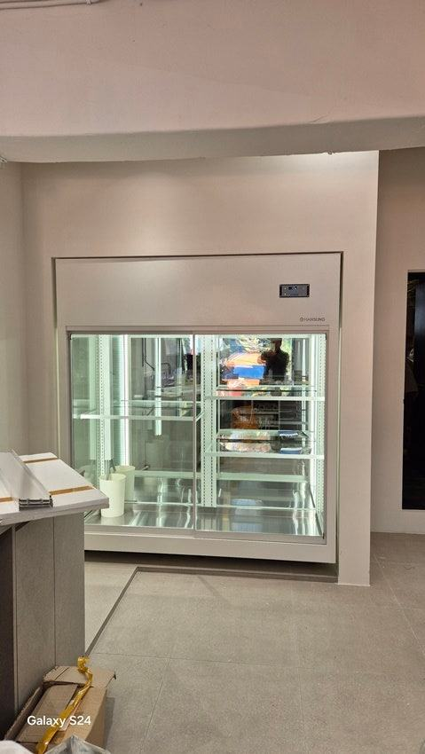
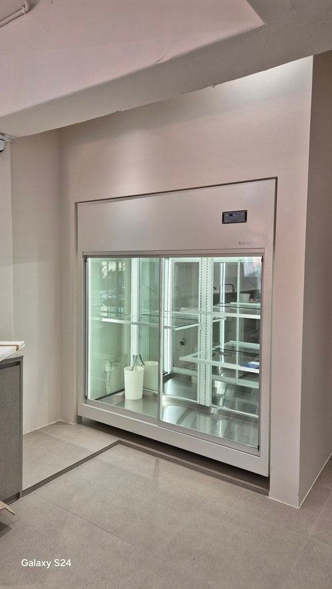
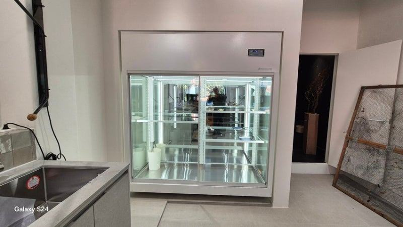
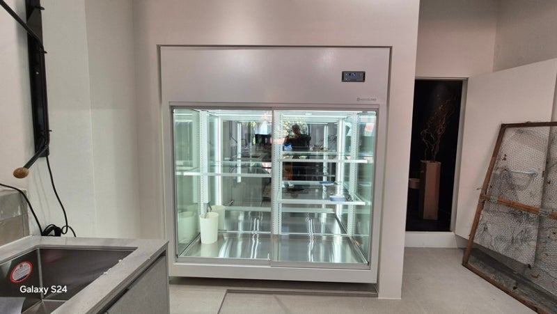
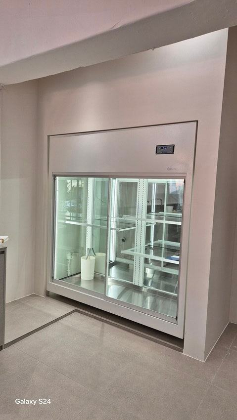
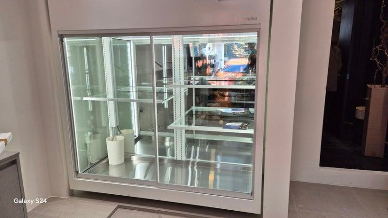
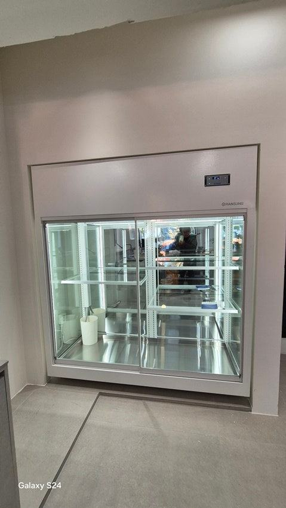
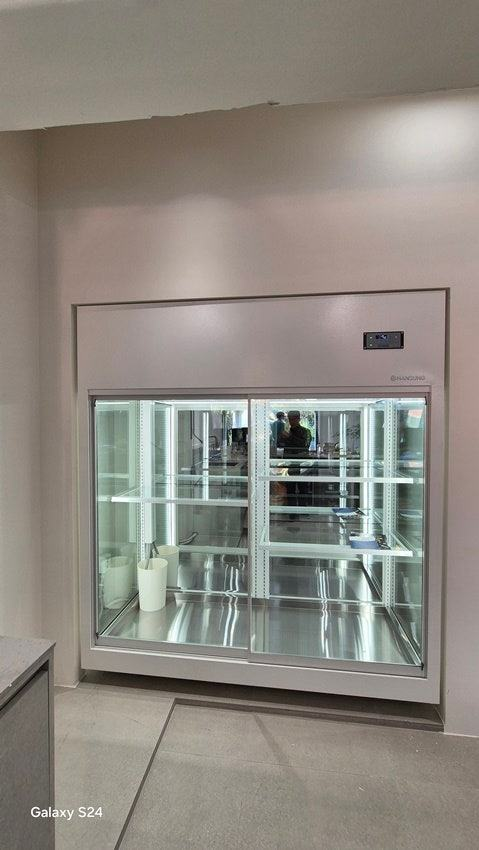

자주 묻는 질문
한성쇼케이스도 꽃냉장고 렌탈을 하나요?
한성쇼케이스는 매장 맞춤 제작 판매를 중심으로 안내해 드리고 있습니다. 렌탈 견적을 받으셨다면 계약 조건을 가져오셔서 맞춤 구매와 비교해 보셔도 좋습니다.
렌탈 꽃냉장고도 크기를 맞출 수 있나요?
렌탈 상품은 대부분 정해진 규격으로 운영됩니다. 매장 자리가 애매하거나 인테리어에 맞춘 디자인이 필요하다면 맞춤 제작이 맞을 수 있습니다.
렌탈 중 고장이 나면 꽃은 어떻게 하나요?
계약서에 고장 대응 시점과 대체 장비 제공 여부가 있는지 먼저 확인하세요. 성수기에는 접수가 몰릴 수 있으니 임시로 옮길 냉장 공간을 마련해 두시면 안전합니다.
매장 조건에 맞춰 만드는 한성쇼케이스
원하시는 제품 사진과 설치할 공간 사진만 보내 주셔도 매장에 맞는 구성을 추천해 드립니다.
- 전국 240여 개 A/S 전담 센터 운영
- 본사 대량 자재 매입으로 품질 대비 합리적인 가격
- 유럽제·삼성 냉각 콤프레셔 적용
- 국내 최초 쇼케이스 전문 디자이너 상주
매장 폭과 원하는 진열 구성을 알려 주세요. 실측과 견적을 안내해 드립니다.
031-986-2458